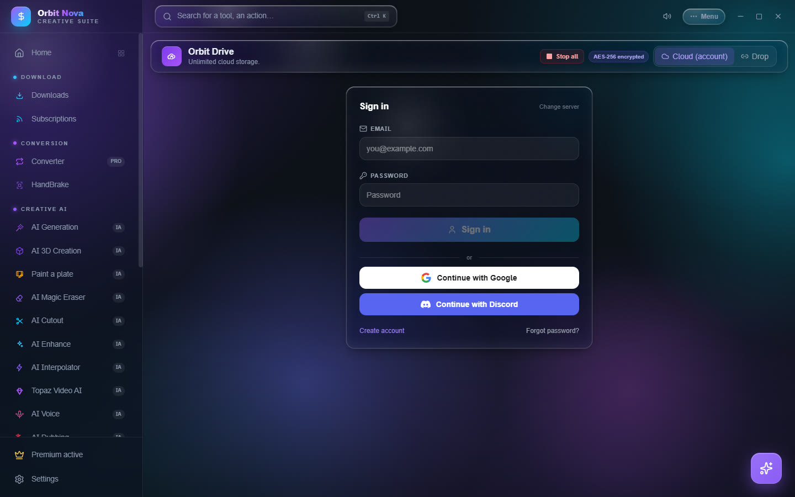

Orbit Drive
Orbit Drive (the Discord Drive) stores your files online by cutting them into encrypted pieces (AES-256) sent to Discord. Your files are encrypted on your PC before they leave: neither Discord nor the Orbit server can read them.
Discord is not made to store files and its terms of service do not plan for it: a channel or an account can be deleted. Always keep another copy of your important files.
The tab has three modes, at the top right: Local, Cloud (account) and Drop.


Local mode
Everything stays on your PC (the file list and the key); the pieces go to your own Discord channel.
- On Discord, pick or create a private channel.
- Channel settings › Integrations › Webhooks › New webhook, then Copy webhook URL.
- In Orbit, paste it in Discord webhook URL. Several webhooks (one per line, in different channels) make uploads faster.
- Pick a strong Encryption passphrase, then Set up Drive.
Without the passphrase, nobody can read the files back, not even you. Write it down somewhere safe: it cannot be recovered.
Each time you open it, type the passphrase to Unlock the Drive. Lock closes it.
Cloud mode (account)
Cloud mode uses an Orbit account: your files follow you on all your PCs.
- Create account (e-mail and password) or Sign in.
- Pick an encryption passphrase; it protects your files and works on all your devices.
Then: Upload files, New folder, Refresh, filter, download, delete. Videos play straight from the Drive. Forgot password? sends a code by e-mail; it changes the sign-in password, not the passphrase.
The Telegram button stores files on your Telegram account (in your Saved Messages) instead of Discord. The Telegram session stays on your PC.
Drop: share without an account
Drop sends a file to someone, even without an account: Orbit encrypts it with a one-time key and gives you a share code. The other person pastes this code in Drop to download and decrypt the file. Drops expire automatically after a while.
Shared folders (codes starting with orbf1_) open in the same place; you can download them, play them or
Save to my Drive.
Share from the Drive
In Cloud mode, Share on a file or a folder creates a code: the content is re-encrypted with a new key, your account key is never sent. Give the share a title: it is visible to anyone who has the code.
Protect a link
When you Share, choose:
- Who can open the link: Anyone with the link or Only me;
- What people can do: View and download, or View only (the person watches but cannot save the file);
- a Password (optional): the person must type it to open the link; it is never sent to the server in clear;
- the Expiry: 1 day, 7 days, 30 days or Never.
Then Create the link. A folder link follows the folder: what you add later shows up for people who already have the link. Links also open in a browser, on orbit-drive.com, without installing Orbit.
View without downloading
In Cloud mode, files have thumbnails (photos, videos, 3D models) and folders show a peek of their content.
Double-click a photo or a 3D model to open it in the viewer (← → for the next one, Esc to close);
videos play directly.
Sync a folder from your PC
Like Google Drive: a folder on your PC stays identical to a folder in the Drive, both ways. Every change is sent and received automatically.
- In Cloud mode, open Sync with this PC then Sync a folder.
- Folder on your PC: Choose a folder…
- In the Drive: a new folder with the same name in My Drive, or the open folder.
- Sync.
The panel shows the status (up to date, files in progress, paused), the Recent activity, and the Sync now, Pause / Resume and Stop syncing buttons (files stay on your PC and in the Drive).
If many files disappear from your PC at once, Orbit asks for a confirmation before deleting them from the Drive: Delete from Drive, or No, put them back on my PC.
When you close Orbit, sync keeps running in the background (icon near the clock), using very little memory.
Folders shared with others
A synced folder can be shared with other Orbit accounts, to work together on the same project (Blender, After Effects…):
- Share the folder and type the person's Orbit account e-mail.
- Tick Can edit (otherwise they are Read-only), then Invite.
- Access opens as soon as that person opens their Drive once. If they did not see the invitation, send them the link with Copy invitation link.
The person finds the folder in Shared with me and can sync it on their PC. Each change reaches the others in one to two seconds. Remove access, Stop sharing or Leave this folder at any time. Encryption stays end-to-end: the server never sees your files.